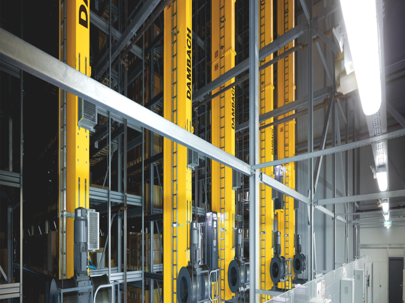
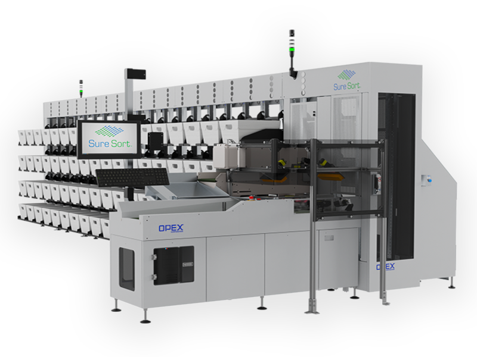

LoAutoStore, fundada en 1996, es una empresa de tecnología de robots de almacén que inventó y continúa siendo pionera en la automatización del almacenamiento de cubos, la solución de cumplimiento de pedidos más densa que existe. Nuestro objetivo es unir software y hardware con habilidades humanas para crear el futuro del almacenamiento.

Smartlog - Dumbach
Ya sea que desee construir un nuevo almacén de gran altura o de piezas pequeñas, o necesite modernizar una instalación existente, esté buscando una mayor eficiencia en sus máquinas de almacenamiento y recuperación o desee configurar un sistema para manipular paletas, DAMBACH tiene las respuestas.

Smartlog - Opex
Nuestras soluciones escalables de automatización de ordenes y documentos mejoran el flujo de trabajo, aceleran los cambios e impulsan la eficiencia de la infraestructura.
Ing. Mauricio Velarde
Experto en simulación de procesos logísticos e industriales
Automatización de procesos
Automatización los procesos, buscando la mayor rentabilidad de la inversion.